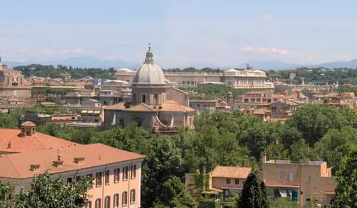
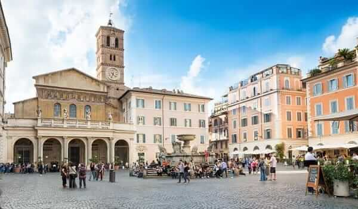

COLISEO ROMANO
El Coliseo de Roma, llamado en la antigüedad Anfiteatro Flavio, es el anfiteatro más grande construido durante el Imperio Romano y el monumento más impresionante de Roma. Cada año lo visitan 6 millones de personas.

FORO ROMANO
El Foro Romano representaba el centro neurálgico de la antigua Roma. En el Foro se desarrollaba la vida pública, cultural y económica de la época republicana y el Imperio.

PLAZA NAVONA
Dotada de un estilo barroco muy elegante, la Plaza Navona es una de las plazas más bonitas y populares de Roma.

FONTANA DI TREVI
¿Te han dicho que debes lanzar una moneda a la Fontana de Trevi y no sabes por qué? Conoce la historia y el mito de la fuente más bonita de Roma y de todo el mundo.

PLAZA DE SAN PEDRO
La Plaza de San Pedro es tal vez la plaza más conocida del mundo y una de las más bonitas. Fue construida por Bernini a mediados del siglo XVII y puede acoger a más de 300.000 personas.

BASÍLICA DE SAN PEDRO
La Basílica de San Pedro es el edificio religioso más importante del catolicismo. En ella, el Papa celebra las liturgias más importantes y su interior acoge a la Santa Sede.

CAPILLA SIXTINA
Considerada como la obra maestra de Miguel Ángel, la Capilla Sixtina es uno de esos lugares que todo el mundo debería ver al menos una vez en la vida.

PLAZA DE ESPAÑA
La Plaza de España es uno de los lugares más concurridos de Roma. Su monumental escalinata es lugar de encuentro de romanos y turistas y ha sido escenario de un sinfín de películas.

PANTEÓN DE AGRIPA
El Panteón de Roma es la obra arquitectónica mejor conservada de la antigua Roma y una de las obras maestras de la arquitectura de la capital italiana.

ARA PACIS
El Ara Pacis es un monumento conmemorativo creado entre los años 13 y 9 a.C. para la celebración de la paz en el Mediterráneo. Conócelo.

ARCO DE CONSTANTINO
El Arco de Constantino fue erigido en el año 315 en conmemoración de la victoria de Constantino el Grande en la batalla del Puente Milvio.

ÁREA SACRA
El Área Sacra es la zona donde se encuentran las ruinas de los templos más antiguos de Roma. Hoy en día la zona está poblada por gatos.

BASÍLICA DE SAN CLEMENTE
Construida sobre la mansión del Emperador Tito Flavio Clemente, la Basílica de San Clemente es un templo cristiano temprano dedicado al Papa San Clemente.

BASÍLICA DE SAN JUAN DE LETRÁN
Erigida en el s.IV en honor a San Juan Bautista y al evangelista San Juan, San Juan de Letrán es la más importante de las cuatro basílicas mayores de Roma.

BASÍLICA DE SAN PABLO EXTRAMUROS
La Basílica de San Pablo Extramuros es una de las cinco basílicas mayores de Roma, la segunda en tamaño por detrás de la de San Pedro.

BASÍLICA DE SAN PIETRO IN VINCOLI
La Basílica de San Pietro in Vincoli fue construida en el siglo V para albergar las cadenas con las que San Pedro fue encarcelado en Jerusalén.

BASÍLICA DE SANTA MARÍA EN TRASTEVERE
La Basílica de Santa María en Trastevere aún conserva su carácter medieval a pesar de las reformas sufridas con el paso de los años.

BASÍLICA DE SANTA MARÍA LA MAYOR
La Basílica de Santa María la Mayor es la más grande de las iglesias dedicadas a la Virgen María en Roma. Es una de las cuatro basílicas mayores de Roma.

BOCA DE LA VERDAD
La Boca de la Verdad es una enorme máscara de mármol de la que se cuenta que mordía la mano de aquél que mentía. Conoce todo sobre este monumento de Roma.

CAMPO DEI FIORI
Animada tanto de día por su mercadillo como de noche por sus restaurantes y terrazas, el Campo de Fiori es una de las zonas más auténticas de Roma.

CASA KEATS SHELLEY
La Casa Keats-Shelley es un museo dedicado a los poetas románticos John Keats y Percy Bysshe Shelley. Conoce la última morada del poeta en Roma.

CASTILLO DE SANT'ANGELO
Conocido como Mausoleo de Adriano, el Castillo Sant'Angelo es una fortaleza situada en el margen derecho del río Tíber, a escasa distancia del Vaticano.

CATACUMBAS DE ROMA
San Sebastián, San Calixto, Domitila, Priscila y Santa Inés. Conoce las diversas catacumbas que se conservan en Roma, qué son y cómo visitarlas.

CIRCO MASSIMO
El Circo Máximo, situado entre los montes Aventino y Palatino, era un recinto alargado con espacio para 300.000 espectadores, el más grande de Roma.

CIUDAD DEL VATICANO
Situado en el corazón de Roma, El Vaticano es el país más pequeño de toda Europa y el centro neurálgico de la Iglesia Católica.

CRIPTA BALBI
La Cripta Balbi ofrece un recorrido histórico a través del pasado de la ciudad de Roma mediante las excavaciones realizadas en sus yacimientos.

FORUM BOARIUM
El Forum Boarium (Foro Boario) era una zona situada a orillas del río Tíber en la cual se llevaba a cabo el mercado de animales en la antigua Roma.

GALERÍA BORGHESE
Situada en los jardines de la Villa Borghese, la Galería Borghese es uno de los museos de arte más famosos y reputados del mundo.

GALERÍA NACIONAL DE ARTE MODERNO
Paul Cézanne, Antonio Canova, Claude Monet, Vincent Van Gogh... la Galería de Arte Moderno de Roma es uno de los mejores museos de arte de Italia.

GALLERIA SPADA
La Galería Spada exhibe una colección de arte de los siglos XVI y XVII. Su mayor atractivo es la galería de la falsa perspectiva, realizada por Borromini.

GIANICOLO
Considerada la octava colina de Roma, Gianicolo es un lugar fresco y apacible en el que resulta un placer pasear disfrutando de las mejores vistas de Roma.

IGLESIA DE SANTA MARÍA DEL POPOLO
Construida para acabar con el fantasma de Nerón, la Iglesia de Santa María del Popolo fue decorada por Pinturicchio, Rafael, Caravaggio y Bernini.

IGLESIA DE SANTA MARÍA IN COSMEDIN
La Iglesia de Santa María in Cosmedin es una iglesia medieval muy conocida gracias a que en su pórtico se ubica la Boca de la Verdad.

MERCADO DE TRAJANO
Construido entre los años 100 y 110, el Mercado de Trajano es el primer centro comercial cubierto de la historia. Acoge el Museo de los Foros Imperiales.

MONTE PALATINO
Lugar de residencia tanto de la loba Luperca como de la Alta Sociedad Romana, el Monte Palatino está considerado la cuna de la capital italiana.

PLAZA DEL POPOLO
La Plaza del Popolo se encuentra al comienzo de la Vía Flaminia y era el lugar por el que llegaban todos los turistas a la ciudad en tiempos del Imperio.

TRASTEVERE
El Trastevere es uno de los barrios más agradables de Roma. Su aire bohemio y tranquilo es capaz de encandilar tanto a turistas como a ciudadanos romanos.

PALACIO BARBERINI
El Palacio Barberini es un edificio barroco que alberga la Galería Nacional de Arte Antigua. Además de la colección, el edificio en sí merece la pena.

VILLA GIULIA
Creado en 1899, el Museo Etrusco de Villa Giulia acoge obras de la antigüedad prerromana italiana, especialmente las pertenecientes al mundo etrusco.